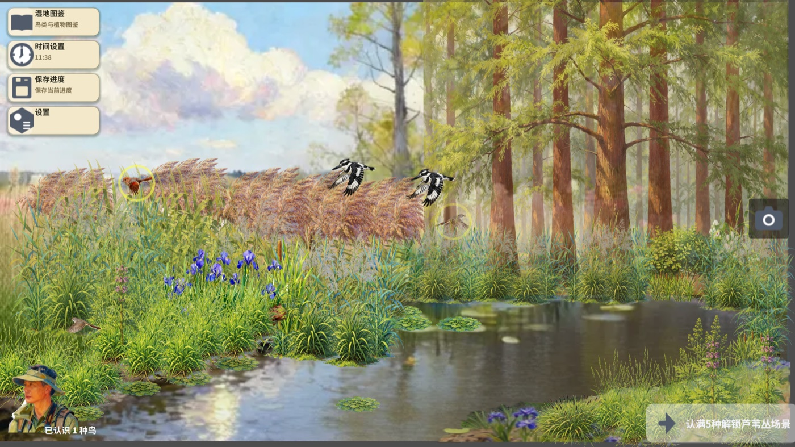
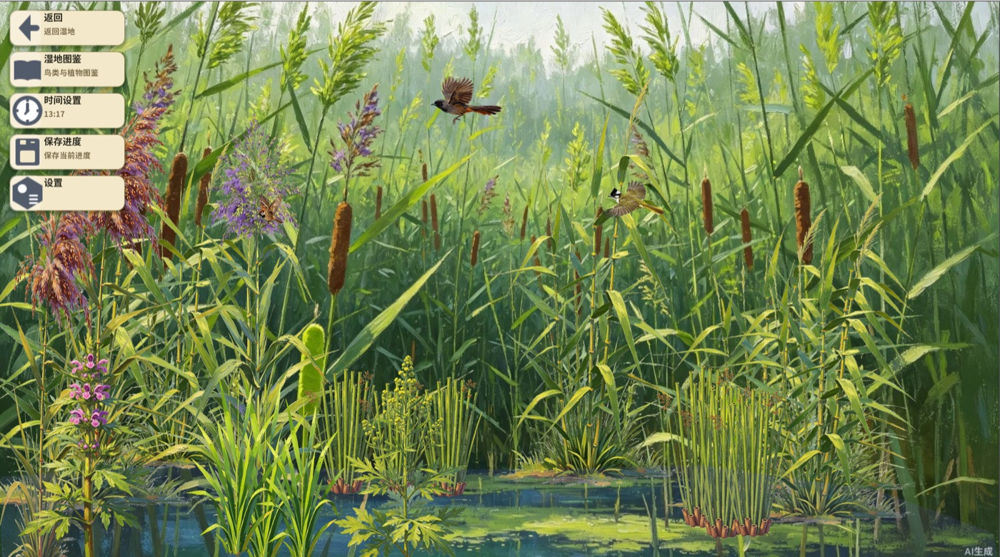

芦苇荡巡护模拟器 Reed Bird-watching Simulator


基于 Godot 的自然保护互动展板,开发耗时 4 个月:78 种湿地鸟(三态 247 条实地记录)、6 层湿地生态场景、7 种真实鸟类行为、图鉴收集与巡护任务。纯 Web 构建,浏览器即开即玩。78 wetland birds (247 field records), 6 ecological layers, 7 real behaviour systems — playable in browser, no download.